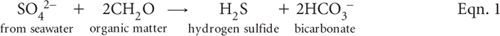
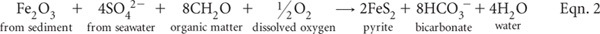

Acid sulfate soils (ASS) result from processes that release H2SO4 into the soil ‘system’ as the soil ripens. The term also refers to soils in which H2SO4 has been, is being, or will be produced in amounts that have lasting effects on soil behaviour and on adjacent waters. Such soils occur in virtually all climatic zones worldwide, with most located in relative recent coastal marine deposits in sub-tropical and tropical regions (Gardner et al. 2002). Land use changes for agriculture, urban development, flood mitigation and for roads are often implicated in allowing oxidation to commence and continue, with consequential releases of large quantities of acid and the subsequent mobilisation of potentially toxic levels of Fe, Al, Mn and possibly heavy metals and metalloids such as arsenic (Dent 1992; Powell and Ahern 2000).
Of most significance in eastern Australia are Holocene marine sediments deposited during the last 6000 to 10 000 years, when sea levels were around 1–1.2 m higher than present. During and following this marine transgression, sea or brackish water with SO42– flooded sediments containing organic detritus from coastal vegetation such as mangroves, particularly in sub-tropical and tropical environments. Sulfate-reducing bacteria (e.g. Desulfovibrio species) flourish under such conditions in the absence of O2, breaking down the OM and reducing SO42–, ultimately to FeS2, as outlined in Eqn. 1 and Eqn. 2.

The overall reaction (Dent 1986) of pyrite formation, assuming Fe2O3 as the source of Fe, is shown in Eqn. 2. Generally, sediments formed in warmer regions have a higher concentration of sulfides than corresponding sediments of colder regions.

Pyrite is the major form of reduced S in most coastal marine-derived sediments and in ASS but other forms occur, such as marcasite (white iron pyrite, also FeS2 but with a different structure, symmetry and crystal shapes). In addition, iron monosulfides (FeS; often termed acid volatile substances) commonly form in fresh, bottom sediments and as coatings on pyrite framboids. Monosilfides have the potential to generate acid on oxidation more rapidly than pyrite (Gardner et al. 2002; Smith 2004).
Pyrites and monosulfides in farmlands are usually associated with low-lying, water logged soils: e.g. Hydrosols and humic gleys, which are soils that are continually or intermittently moist, with or without a peaty covering, but with dark-coloured organic-mineral horizons of moderate thickness underlain by mineral gley horizons. Provided the pyrite remains covered with water, the material is stable and the pH is often weakly alkaline to slightly acidic. These are sometimes termed potential acid sulfate soils (PASS), because of their potential to form H2SO4 following oxidation. In contrast, actual acid sulfate soils (AASS) are very strongly acidic (usually soil pH values <4.0), due to earlier release of H2SO4. Because oxidising conditions often overlay reducing conditions in the same soil profile, AASS and PASS can apply to different parts of the same profile. The term ASS is used to refer to the whole profile of these kinds of soils.
Old root channels are influential in ASS. They initially provide a source of organic material, permit the rapid entry of sea water, supplying SO42– and rapid removal of bicarbonate-rich waters (Eqns. 1 and 2). Subsequent partial oxidation of pyrite produces jarosite [KFe3(SO4)2(OH)6], a pale yellow-coloured mineral often seen in ASS affected areas. The formation of jarosite requires oxidising conditions, the presence of K+ and a pH ≤3.7 (van Breeman 1973). Jarosite has low water solubility (Ksp = 10–98.6) and obtains its K+ from acid-weathering products of alumino-silicates and/or from exchangeable K+ present in the soil. Moreover, other minerals in the alunite–jarosite group can occur, such as natrojarosite (Na+ substitutes for K+) and hydronium jarosite (H3O+ substitutes for K+). Consequently, both pyrite and jarosite are not uniformly distributed through most soil profiles, making representative sampling difficult to achieve. As a broad rule of thumb, ASS in coastal regions are highly unlikely to occur at uncontaminated sites with current-day surface elevations of 3–10 m above mean sea level (Gardner et al. 2002). In addition, ASS deposits are unlikely to occur in river systems with freshwater outflows much larger than tidal exchange volumes (White et al. 1996).
Pyrite contained in ASS can range from 0.1% to 18% dry wt, with median values commonly around 1.5%. Agreed ‘action levels’ of oxidisable S in Eastern Australia that trigger further management range from 0.03% S in sands, 0.06% in medium-textured soils, and 0.1% S in fine-textured soils (Ahern et al. 1998).
In addition to desktop assessment based on topographic and ASS maps, two principal approaches are used to recognise ASS, and to indicate risks and land management options. These are:
• visible on-site indicators (e.g. iron staining, water colour, vegetation, jarosite), and
• laboratory and field testing.
Visible on-site indicators
Firstly, low pH (i.e. pH ≤4) in streams and swamps, inclusive of SO42–, can cause natural waters to become milky green (indicating dissolved Fe2+) through to bluish green of high clarity (indicating low pH and high dissolved Al concentration). More commonly, natural waters, stream banks and stream sediments can develop rust or ochre coloured stains of Fe oxyhydroxides and oxides. Flocs and ‘ropes’ of these may develop in rivers, particularly following major run-off events.
Secondly, substantial corrosion to concrete structures such as culverts and bridge pylons can be expected. The process involves exfoliation and dissolution of concrete structures through formation of etteringite [e.g. (CaO)3(Al2O3)(CaSO4)3.32H2O], a product resulting from reaction between gypsum and calcium aluminates in concrete.
Thirdly, chronic acidity promotes the dominance of acid-tolerant plants such as water lilies, sedges, marine couch, melaleuca, casuarina and phragmites. Acid tolerant fish are favoured and in extreme cases, fish kills may occur due to Al toxicity, although tissue hypoxia may also be a factor due to chemical oxygen demand (Gardner et al. 2002). Acidified drain waters in coastal Eastern Australia have been linked to the prevalence of epizootic ulcerative syndrome (red-spot disease), although this fish disease can occur in waters of widely varying pH (Sammut et al. 1995).
Fourthly, when heavy-textured ASS are exposed, trapped H2S can be liberated, easily identified immediately from its distinctive ‘rotten egg’ smell. H2S production is an important stage in pyrite formation and its rate of production from SO42– reduction (see Eqn. 1 for example) is always faster than the subsequent reaction transforming it into FeS2 (White and Melville 1993).
Finally, the presence of yellow, butter-like material, especially around the edges of prior root channels and along drain banks and cuttings, is indicative of jarosite. This mineral commonly forms when PASS material is excavated and allowed to oxidise.
Laboratory and Field Testing
The chemistry of ASS can be complex, and so too can be their analysis. Because of this complexity, there is no universal, low cost, laboratory or field analytical procedure that provides all the information required to effectively characterise ASS and to provide help for their management. Several laboratory tests (e.g. Sullivan et al. 2000; Rayment et al. 2003; Ahern et al. 2004c; Anon 2008) and field tests (e.g. Dent and Bowman 1996; Plunkett et al. 2003; Raymond and Rayment 2003, Watling et al. 2004), however, have been developed in Eastern Australia for characterising and determining potential environmental risks from these soils, plus related attributes such as neutralising value and lime requirements. Details are summarised in Table 20.1, with more information provided in preambles to individual methods.
Choice of method depends upon the reason/s for testing, whether approximate results are all that are necessary, equipment in the laboratory, how quickly a result is required, and the quantum of funds allocated for testing. For example, the field tests included in this chapter are usually cheaper and faster than the more reliable and accurate laboratory alternatives provided. Field testing does enable the rapid testing of multiple sites and profile segments close to when earth-work decisions must be made. Confidence in the field-derived findings improves with local experience and when supported by tests of corresponding ASS attributes in an accredited laboratory.
Laboratory testing is always preferred for precise studies. In addition, all components of the soil’s acid–base budget warrant consideration for critical studies on net acidity and liming rates for ASS. Two suites of analysis that take these components into account are the ‘chromium suite’ and the ‘SPOCAS suite’, outlined diagrammatically in Figures 20.1 and 20.2 (Ahern et al. 2004b). The complexity of each suite depends on the initial soil pH. Several determinations and calculations may need to be made. It is noteworthy that total S determinations alone (see Chapter 10) do not equate to the actual or potential acidity of ASS, nor does knowledge of total soil S alone account for acid neutralising reactions in the soil that may decrease or counteract potential acidity due to the oxidation of sulfides.
Moist soils sampled immediately prior to examination (with any free-water discarded) are used for field tests. For all Chapter 20 ASS tests intended for laboratory use, however, it is essential that soil samples reach the laboratory in a manner that limits or prevents atmospheric exposure that could trigger oxidation reactions after sampling. Samples should be dried at 85°C soon after receipt at the laboratory and subsequently ground to <0.5 mm particle size, after removing visible shell, stones and litter. Finer grinding to a powder (e.g. in a ring mill to <75 μm) is recommended by Ahern et al. (2004a) and in Australian Standards (see Anon 2008) for most ASS methods. More recent research, however, suggests this tedious and costly step may not always be warranted (D Lyons, A McElnea, N Finch and C Tallis unpublished report 2009).
Table 20.1. Summary details of method codes, method titles, technologies and notes on laboratory and field tests described in this chapter. These method codes do not always harmonise with those used in the ASS Laboratory Guidelines of Ahern et al. (2004c).
Code |
Technology |
Test method |
Notes |
20A1 |
Distillation and titration. |
Chromium reducible S (SCR). |
Reliable and reasonably quick laboratory method for reduced inorganic S but has safety and environmental issues. |
20B1 |
Extraction followed by pH measurement. |
SPOCAS acid trail – titratable actual acidity (TAA). |
Good laboratory estimate of actual soil acidity. Negligible safety and environmental issues. |
20C1 |
Extraction–peroxide oxidation followed by pH measurements. |
SPOCAS acid trail – titratable peroxide acidity (TPA) and net (excess) acid neutralising capacity (a-ANCE). |
Logical companion to Method 20B1 for ASS. Apart from peroxide, has few safety and environmental issues. |
20D1 |
Extraction/analysis. |
1 M KCl-extractable S, Ca and Mg. |
Empirical extraction. |
20E1 |
Extraction–peroxide oxidation/analysis. |
1 M KCl-extractable S, Ca and Mg after peroxide oxidation. |
Empirical extraction; results influenced by completeness of peroxide oxidation step. |
20F1 |
Acid extraction/analysis. |
Sulfur – 4 M HCl extraction (SHCl), ICPAES finish. |
Empirical extraction; expect higher results by ICPAES when soils contain high OM. |
20F2 |
Sulfur – 4 M HCl extraction (SHCl), ion chromatography finish. |
Empirical extraction; expect slow, slightly low but reliable results by IC across all soils. |
|
20G1 |
Extraction/analysis. |
Peroxide residual acid soluble S (SRAS). |
Empirical extraction; results influenced by completeness of peroxide oxidation step. |
20H1 |
Supplementary chemical tests. |
Acid neutralising capacity – acid reacted and back titration (ANCBT). |
Useful estimate of ANCBT. |
20I1 |
As above. |
Acid neutralising capacity – from SPOCAS. |
Useful estimate, although likely to be less reliable than Method 20H. |
20J1 |
Suite of relatively simple soil chemical tests. |
Field approximation of ASS hazard: |
Useful estimates at low cost. Apart from peroxide, has few safety and environmental issues. |
20K1 |
Soil texture (by hand), relatively simple soil pH tests (one following peroxide oxidation), plus a ‘look-up’ table. |
Quick field approximations of ASS presence and associated lime requirement for drain-spoil: Field texture class; Field pH test (pHF following H2O2 oxidation (pHFOX); Lime rate); Field pH from ‘look-up’ table. |
Useful, low-cost estimates calibrated for canelands of Eastern Australia. Apart from peroxide, the tests have few safety and environmental issues. |
†Now referred to as Titratable actual acidity